Version：Home Assistant 2026.6.3
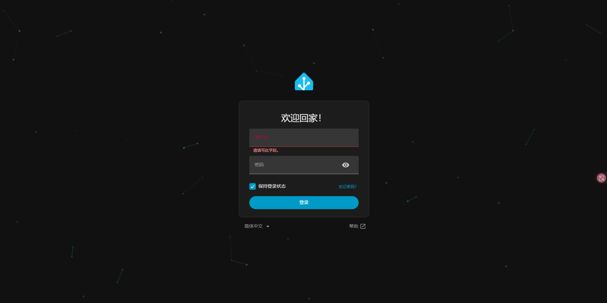
# 介绍
HomeAssistant 是一个开放的智能家居管理平台，可以让你在自己的硬件上运行，并与数千个设备和品牌一起工作。
官网：https://www.home-assistant.io/
# 安装
运行 Docker：
docker pull homeassistant/home-assistant:latest | ||
docker run -d \ | ||
--name homeassistant \ | ||
-p 23584:8123 \ | ||
-e TZ=Asia/Shanghai \ | ||
-v /dev/bus/usb:/dev/bus/usb \ | ||
-v /home/.app/homeassistant/config:/config \ | ||
--restart unless-stopped \ | ||
homeassistant/home-assistant |
# 使用
进入访问，并创建你的管理账号：
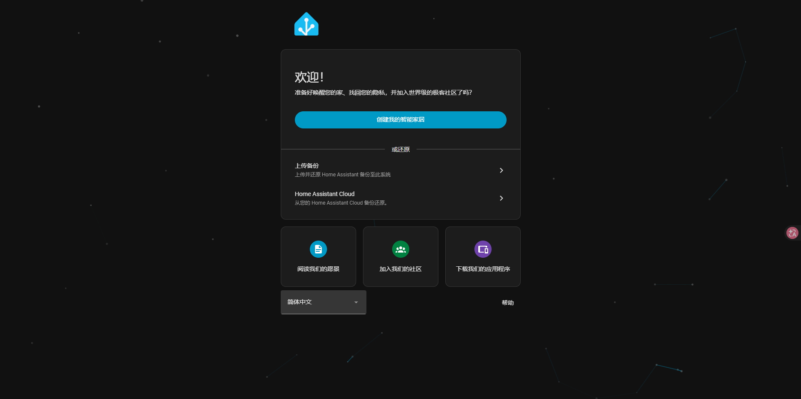
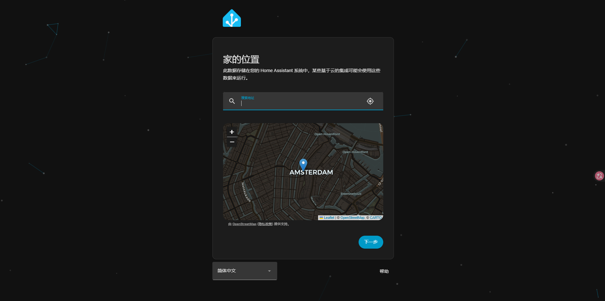
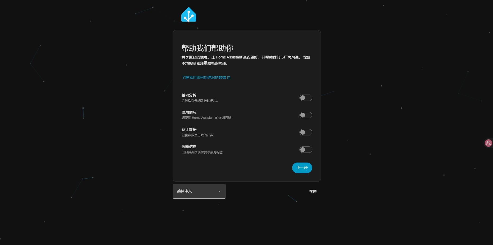
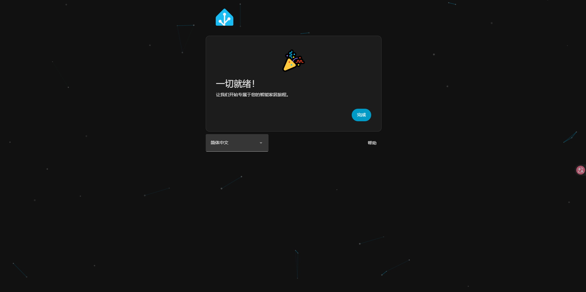
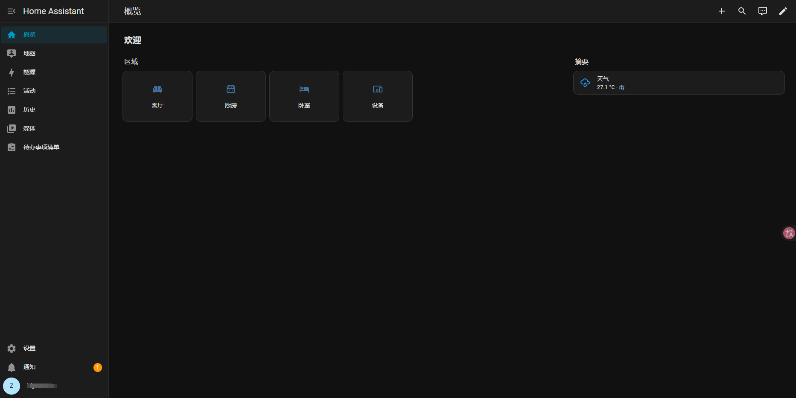
# 拓展
# HACS
HACS（Home Assistant Community Store）是 Home Assistant 的社区集成商店，可让你轻松安装和管理非官方的集成、插件和主题。
先在你的终端后台进入到 homeassistant 容器内：
docker exec -it homeassistant bash |
并获取安装 hacs：
wget -O - https://get.hacs.xyz | bash - | ||
Connecting to get.hacs.xyz (172.67.68.101:443) | ||
Connecting to raw.githubusercontent.com (185.199.110.133:443) | ||
writing to stdout | ||
- 100% |*************************************************************************| 4990 0:00:00 ETA | ||
written to stdout | ||
INFO: Trying to find the correct directory... | ||
INFO: Found Home Assistant configuration directory at '/config' | ||
INFO: Creating custom_components directory... | ||
INFO: Changing to the custom_components directory... | ||
INFO: Downloading HACS | ||
Connecting to github.com (20.205.243.166:443) | ||
Connecting to github.com (20.205.243.166:443) | ||
Connecting to release-assets.githubusercontent.com (185.199.108.133:443) | ||
saving to 'hacs.zip' | ||
hacs.zip 100% |*************************************************************************| 18.1M 0:00:00 ETA | ||
'hacs.zip' saved | ||
INFO: Creating HACS directory... | ||
INFO: Unpacking HACS... | ||
INFO: Verifying versions | ||
INFO: Current version is 2026.6.3, minimum version is 2024.4.1 | ||
INFO: Removing HACS zip file... | ||
INFO: Installation complete. | ||
INFO: Remember to restart Home Assistant before you configure it |
详细的安装说明可看：https://hacs.xyz/docs/use/download/download/
然后重启容器。
搜索并安装，在 设置 -> 设备与服务 -> 添加集成 -> hacs ：
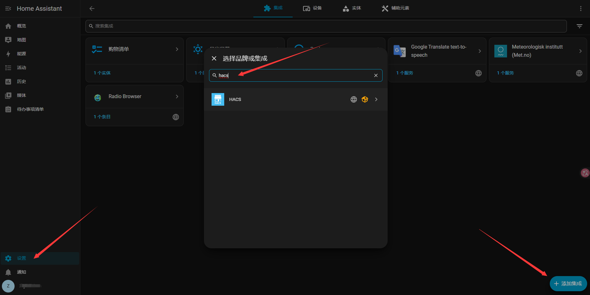
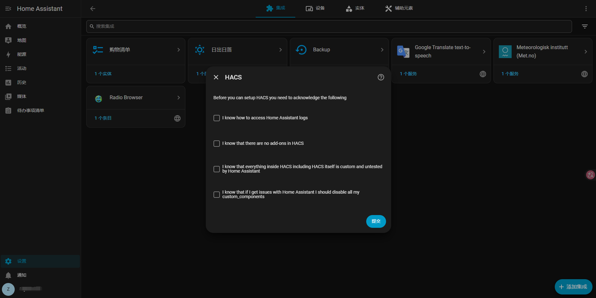
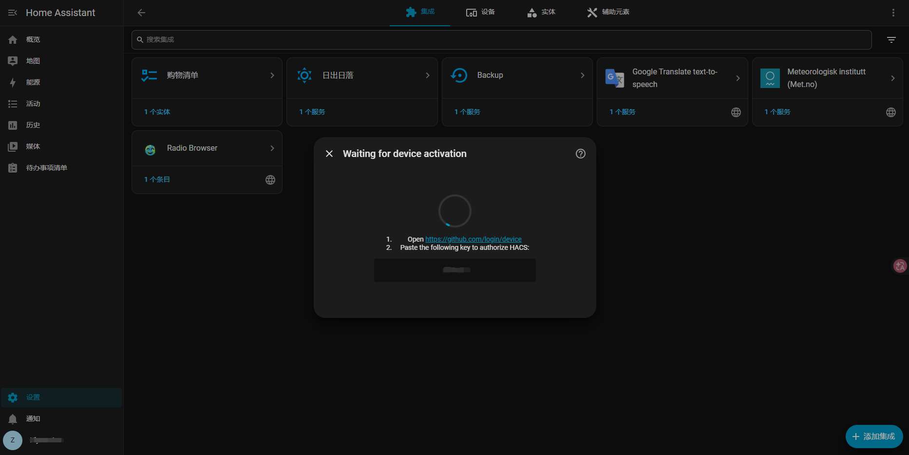
然后点击链接对 GitHub 进行关联：
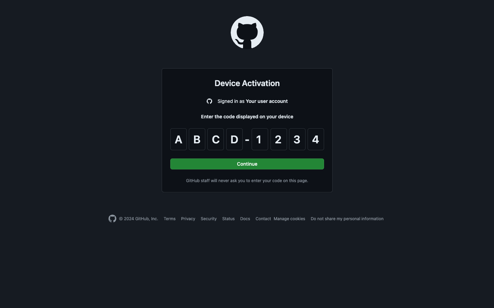
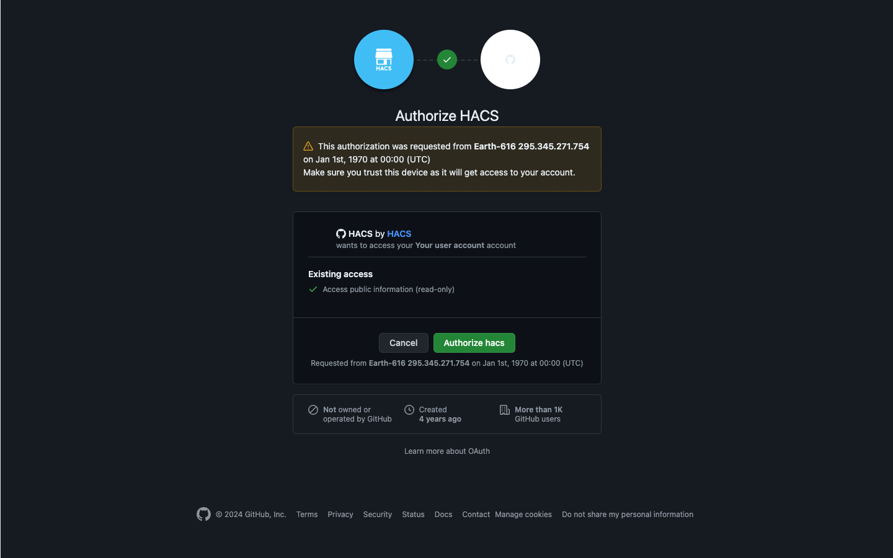
校验关联完毕，回到 Home Assistant 上，然后再重启一遍，后期就可以利用 hacs 安装各种第三方插件了。